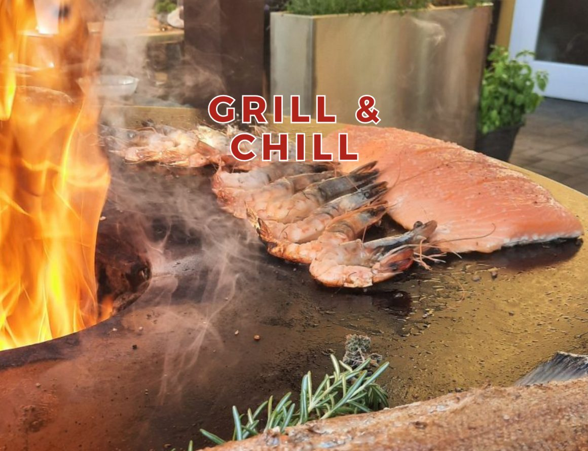

Mittagsbuffet
Das Buffet zur Mittagszeit – schnell, warm und trotzdem in Ruhe. Ideal für Business Lunch und alle, die in der Mittagspause nicht auf einen Teller warten wollen. € 16,– pro Person, ab 11:30 Uhr.
Start › Kulinarik
Kulinarik
Mittagsbuffet, wöchentliches Menü, SURPRISE Menü und die Saisonen von Grill Night bis Gansl – alles, was bei den Schrottis auf den Tisch kommt.
Unser Küchenteam ist ständig bemüht, Sie auf eine kulinarische Reise in die kreative Welt des Geschmackes zu entführen. Bei der Zubereitung legen wir größten Wert auf regionale und saisonale Produkte und arbeiten verstärkt mit Lieferanten aus der Region zusammen.
Mittagessen mit Familie und Freunden, Business Lunch, feines Abendessen, kleiner Hunger oder ein gemütliches Getränk mit Kollegen: Die Küche hat durchgehend offen – die Küchenzeiten finden Sie unten.

Täglich & wöchentlich
Das Buffet zur Mittagszeit – schnell, warm und trotzdem in Ruhe. Ideal für Business Lunch und alle, die in der Mittagspause nicht auf einen Teller warten wollen. € 16,– pro Person, ab 11:30 Uhr.
Ab 11:30 Uhr, € 16,– pro Person: Suppe, zwei Hauptspeisen zur Wahl und reichhaltiges Salatbuffet. Jede Woche neu zusammengestellt – unten steht die aktuelle Woche.
Abends ab 17 Uhr. Ein schön gedeckter Tisch mit viel Kerzenschein, ein köstliches Gedeck und Ihr gewähltes Menü – auf Wunsch mit abgestimmter Weinbegleitung.
Das SURPRISE Menü ist auch als Gutschein erhältlich – siehe Gutschein-Bestellung.
Lunch-Menü
Ab 11:30 Uhr, € 16,– pro Person: Suppe, Hauptspeise nach Wahl und ein reichhaltiges Salatbuffet. Am Mittwoch wird stattdessen gegrillt.
31. August 2026
1. September 2026
26. August & 2. September, ab 18 Uhr
Statt Buffet wird gegrillt – bei jeder Witterung, am Keramikgriller im Freien. Siehe auch Grill Night.
Donnerstag und Mittwoch sind Ruhetage in der Küche; das Buffet läuft Montag und Dienstag. Die Wochenübersicht wechselt im Live-Betrieb wöchentlich – ohne neues PDF, ohne Agentur.
Speisekarte
Regional eingekauft, saisonal gekocht. Die Buchstaben hinter den Gerichten sind die gesetzlich vorgeschriebenen Allergenangaben – die Legende steht am Ende der Karte.
Für unsere Kleinen
Vier Gerichte, die Kinder wirklich essen – und eine Speisekarte zum Ausmalen, während gekocht wird.
Dazu: Leberknödelsuppe, Frittatensuppe und Pommes frites als eigene Portion.
Freitags & samstags ab 17 Uhr, nur auf Vorbestellung
Genießen in einer geselligen Runde: Es erwartet Sie ein Tisch, voll gedeckt mit allem, was das Herz begehrt – serviert in vier Gängen. Lachen, genießen und teilen.
Abends ab 17 Uhr, 4-, 5- oder 6-gängig
Ein schön gedeckter Tisch mit viel Kerzenschein, ein köstliches Gedeck und Ihr gewähltes Menü – auf Wunsch mit abgestimmter Weinbegleitung. Preise siehe oben.
Herkunft
„Regional“ ist bei uns kein Wort auf der Karte, sondern eine Liste mit Namen und Orten.
Fleisch: Vulkanlandschwein, Fleischhandel Taucher Hartl
Hendl: Familie Herbst, Kulming
Fisch: Kulmer, Haslau
Eier: Bauernhof Hödl, Illensdorf
Bauernhof Hödl Illensdorf, Sander Kroisbach, Schwarz St. Ruprecht
Erdäpfel: Schwarz St. Ruprecht, Ruhirtl Pischelsdorf
Äpfel: Reichstamm Pischelsdorf
Färber Hirnsdorf, Haidinger Hirnsdorf, Ölmühle Fandler Pöllau
Roggenbrot und Gebäck von der Wachmann Mühle, Hirnsdorf
Fruchtsäfte: Sasser Siegersdorf, Strempfl Gschmaier, Krämer Hofing, Adelmann Arnwiesen
Naturbier: Gratzer Alois, Tiefenbach – CO2-neutral
Kaffee: B & F, Stubenberg
Eis: Eisoase Pischelsdorf
Im Jahreslauf
Was es wann gibt – vom Grillsommer bis zum Backhendl zu Silvester.
Mittwochs: 22. & 29. Juli, 5., 12., 19. & 26. August, 2. September
„Wir grillen den Mittwoch“ – den ganzen Sommer lang, am Keramikgriller im Freien.
Freitag & Samstag ab 17 Uhr, nur auf Vorbestellung
Der Tisch wird gedeckt, bis kein Platz mehr ist: viele kleine Gänge, gemeinsam in der Mitte.
Mitte Oktober bis Mitte November
Bio-Weidegans und Wild – die Klassiker der oststeirischen Herbstküche.
Advent · Weihnachtsfeiertag 26. Dezember geöffnet
Glühweinempfang mit Fingerfood auf der weihnachtlich geschmückten Terrasse, Aperitif im Gewölbe-Weinkeller.
„NOCHT in TROCHT“, ab 18 Uhr
Party in Tracht mit Feuerwerk – der Jahreswechsel auf oststeirisch.
31. Dezember
Knuspriges Backhendl genießen.
Faschingszeit
BauernSCHMAUS Buffet.
13. & 14. Februar ab 17 Uhr
Für Verliebte, bei Kerzenschein. Wer die Nacht gleich dazu nimmt: siehe Dinner & Night.
Für die Kleinen
Wir versüßen Ihren Kleinen die Wartezeit auf das leckere Essen mit unserer neuen AusmalSpeiseKarte – Buntstifte liegen bereit. Und wenn die Karte fertig ausgemalt ist, wartet draußen der Spielplatz.
Kinder sind bei uns auch beim Übernachten willkommen: bis zum 6. Lebensjahr € 2,00 pro Lebensjahr im Elternzimmer, von 6 bis 12 Jahren 50 % Ermäßigung.